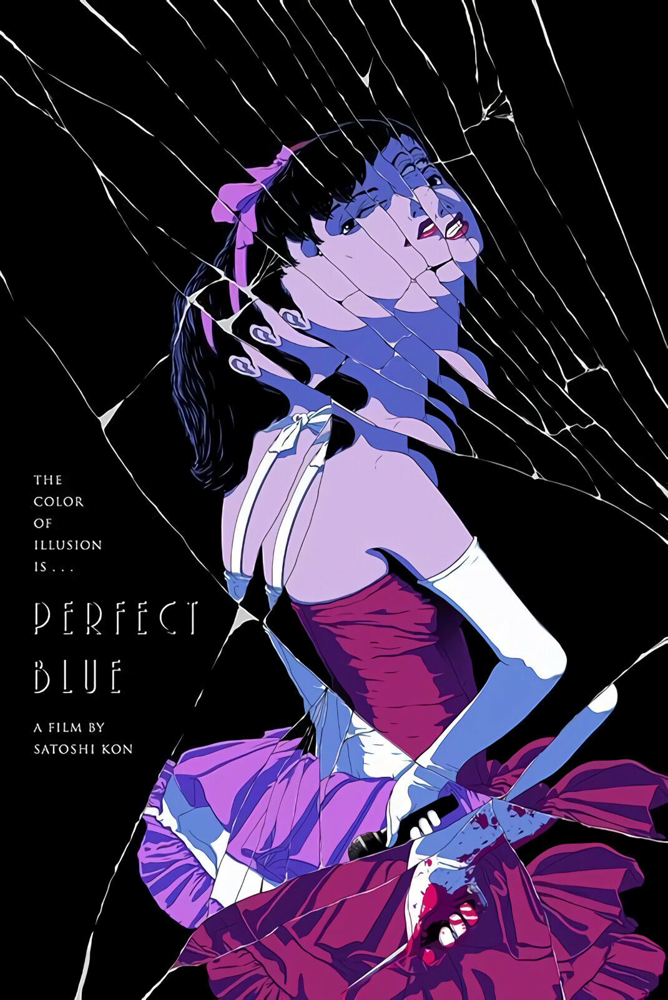
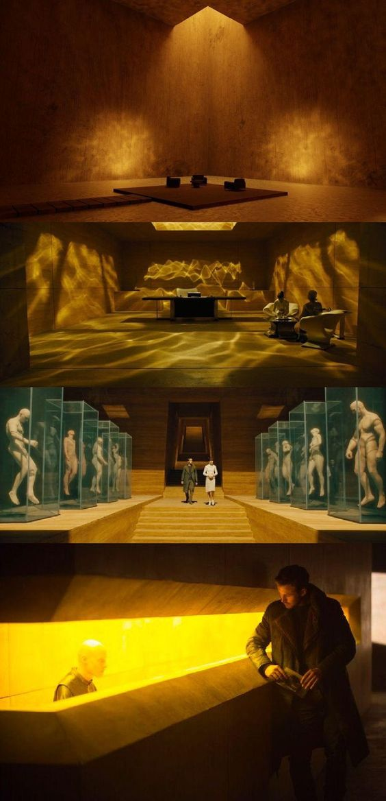

-

Anime
Anime has always been my comfort zone in life. I've watched a lot during the pandemic and continue to do so from time to time. It always felt reminiscient of my childhood days. Some of my favorites are Monster, Kaguya-sama, Perfect Blue, and many more.
-

Movies
Other than anime, watching movies always felt like a time well spent for me. The runtime feels right, and people in the industry have been really creative and innovative in crafting art, displaying emotions or bringing explosive entertainment.
Gaming
Although I still consider myself as a noob, I do enjoy playing video games. When done right, they give interactive and really refreshing experience that immerse you in a world where everythin is cool and has engaging mechanics. It really do make time flies Some I played are Persona 5, ETG, Dave the Diver, and DDLC.

Technical Skills:
Proficient in Python, Java, AHK (AutoHotKey), C#, C++, ASPX, and HTML.
Operating Systems:
Skilled in various Linux distributions, navigating and optimizing system functionalities.
Cloud Computing:
AWS (Amazon Web Services) expertise, handling cloud infrastructure for diverse applications.
Networking:
Networking wizardry, adept at configuring and optimizing network setups.
Virtualization:
Proficient in virtualization technologies, excelling in creating and managing virtual mesh networks.
Microsoft Tools:
Skilled in utilizing Microsoft tools such as .NET, Visual Studio, and other Windows-based applications for software development and system integration.